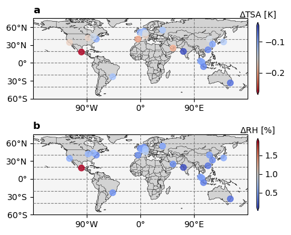

Example 4: Urban adaptation benefit across different region
[1]:
from pyclmuapp import pts_clmu
from pyclmuapp import usp_clmu
from pyclmuapp.getcity import *
import matplotlib.pyplot as plt
import pandas as pd
import os
1 PTS mode: using the CESM provide global data
Using the PTS mdoe to explore the urban adaptation potential of the 24 selected cities.
Only the high-density urban (HD) is considered in this experiment as HD has an obvious urban effect and is ubiquitous in each grid. Each HD urban surface parameter increased decreased 0.2 respectively, and then the differences of urban-related variables in case of changed parameters and default were compared.
[2]:
# Cities' lat and lon is from https://www.lboro.ac.uk/microsites/geography/gawc/world2020t.html
# and then use getcity.py to get the nearest grid cell in CESM
case_loc = {1: {'case_lat': '51.36', 'case_lon': '0.0', 'city': 'London'},
2: {'case_lat': '40.05', 'case_lon': '-73.75', 'city': 'New_York'},
3: {'case_lat': '40.05', 'case_lon': '116.25', 'city': 'Beijing'},
4: {'case_lat': '22.15', 'case_lon': '113.75', 'city': 'Hong_Kong'},
5: {'case_lat': '31.57', 'case_lon': '121.25', 'city': 'Shanghai'},
6: {'case_lat': '35.34', 'case_lon': '140.0', 'city': 'Tokyo'},
7: {'case_lat': '24.97', 'case_lon': '55.0', 'city': 'Dubai'},
8: {'case_lat': '48.53', 'case_lon': '2.5', 'city': 'Paris'},
9: {'case_lat': '1.41', 'case_lon': '103.75', 'city': 'Singapore'},
10: {'case_lat': '53.25', 'case_lon': '6.25', 'city': 'Amsterdam'},
11: {'case_lat': '-6.13', 'case_lon': '106.25', 'city': 'Jakarta'},
12: {'case_lat': '18.38', 'case_lon': '-98.75', 'city': 'Mexico_City'},
13: {'case_lat': '-23.09', 'case_lon': '-46.25', 'city': 'Sao_Paulo'},
14: {'case_lat': '50.42', 'case_lon': '3.75', 'city': 'Brussels'},
15: {'case_lat': '3.3', 'case_lon': '101.25', 'city': 'Kuala_Lumpur'},
16: {'case_lat': '45.71', 'case_lon': '8.75', 'city': 'Milan'},
17: {'case_lat': '-33.46', 'case_lon': '151.25', 'city': 'Sydney'},
18: {'case_lat': '41.94', 'case_lon': '-87.5', 'city': 'Chicago'},
19: {'case_lat': '34.4', 'case_lon': '-118.75', 'city': 'Los_Angeles'},
20: {'case_lat': '55.13', 'case_lon': '37.5', 'city': 'Moscow'},
21: {'case_lat': '43.82', 'case_lon': '-78.75', 'city': 'Toronto'},
22: {'case_lat': '50.42', 'case_lon': '8.75', 'city': 'Frankfurt'},
23: {'case_lat': '40.05', 'case_lon': '-3.75', 'city': 'Madrid'},
24: {'case_lat': '19.32', 'case_lon': '72.5', 'city': 'Mumbai'}}
[3]:
# initialize the pts_clmu object
def workflow(case_num):
pts = pts_clmu(
pwd=None,
input_path="/home/zhonghua/p/scratch/CESMDATAROOT/inputdata",
output_path="/home/zhonghua/p/scratch/CESMDATAROOT/Archive/lnd/hist",
log_path="/home/zhonghua/p/scratch/CESMDATAROOT/CaseOutputs",
scripts_path = "/home/zhonghua/p/scripts",
container_type='docker')
# set the case configuration
pts.caseconfig['case_length'] = "3"
pts.caseconfig['hist_nhtfrq'] = '1'
pts.caseconfig['STOP_OPTION'] = "nmonths"
pts.caseconfig['hist_mfilt']='240000' # large number to avoid output with more files
pts.caseconfig['output_murban'] = 'True' # output the whole urban area weather (if True, the output the TBD, HD and MD urban)
pts.caseconfig['mu_urban'] = "'TSA','RH2M'" # output the urban landunit
pts.caseconfig['RUN_STARTDATE'] = '2012-06-01'
pts.caseconfig['DATM_CLMNCEP_YR_START'] = '2012'
pts.caseconfig['DATM_CLMNCEP_YR_END'] = '2012'
pts.caseconfig['case_name'] = case_loc[case_num]['city']
pts.caseconfig['case_lat'] = case_loc[case_num]['case_lat']
pts.caseconfig['case_lon'] = case_loc[case_num]['case_lon']
# run the case
pts_or=pts.run(iflog=True, cmdlogfile='pts_London.log')
# modify the surface albedo of HD urban, numurbl=1; TBD urban, numurbl=0; MD urban, numurbl=2
# action=0.2 means increase the albedo by 0.2
pts.modify_surf(var="ALB_ROOF_DIR", action=0.2, numurbl=1)
pts_surf=pts.run(iflog=True, cmdlogfile='pts.log')
pts.modify_surf(var="ALB_ROOF_DIR", action=-0.2, numurbl=1)
return pts_or, pts_surf
result_or = {}
result_surf= {}
for i in range(1, 25):
result_or[i], result_surf[i] = workflow(i)
print(result_or)
print(result_surf)
The surface input file has been modified. The modified file is /p/scratch/CESMDATAROOT/inputdata/lnd/clm2/surfdata_map/release-clm5.0.18/surfdata_0.9x1.25_hist_16pfts_Irrig_CMIP6_simyr2000_c190214_modified_London.nc.
The surface input file has been modified. The modified file is /p/scratch/CESMDATAROOT/inputdata/lnd/clm2/surfdata_map/release-clm5.0.18/surfdata_0.9x1.25_hist_16pfts_Irrig_CMIP6_simyr2000_c190214_modified_London.nc.
The surface input file has been modified. The modified file is /p/scratch/CESMDATAROOT/inputdata/lnd/clm2/surfdata_map/release-clm5.0.18/surfdata_0.9x1.25_hist_16pfts_Irrig_CMIP6_simyr2000_c190214_modified_New_York.nc.
The surface input file has been modified. The modified file is /p/scratch/CESMDATAROOT/inputdata/lnd/clm2/surfdata_map/release-clm5.0.18/surfdata_0.9x1.25_hist_16pfts_Irrig_CMIP6_simyr2000_c190214_modified_New_York.nc.
The surface input file has been modified. The modified file is /p/scratch/CESMDATAROOT/inputdata/lnd/clm2/surfdata_map/release-clm5.0.18/surfdata_0.9x1.25_hist_16pfts_Irrig_CMIP6_simyr2000_c190214_modified_Beijing.nc.
The surface input file has been modified. The modified file is /p/scratch/CESMDATAROOT/inputdata/lnd/clm2/surfdata_map/release-clm5.0.18/surfdata_0.9x1.25_hist_16pfts_Irrig_CMIP6_simyr2000_c190214_modified_Beijing.nc.
The surface input file has been modified. The modified file is /p/scratch/CESMDATAROOT/inputdata/lnd/clm2/surfdata_map/release-clm5.0.18/surfdata_0.9x1.25_hist_16pfts_Irrig_CMIP6_simyr2000_c190214_modified_Hong_Kong.nc.
The surface input file has been modified. The modified file is /p/scratch/CESMDATAROOT/inputdata/lnd/clm2/surfdata_map/release-clm5.0.18/surfdata_0.9x1.25_hist_16pfts_Irrig_CMIP6_simyr2000_c190214_modified_Hong_Kong.nc.
The surface input file has been modified. The modified file is /p/scratch/CESMDATAROOT/inputdata/lnd/clm2/surfdata_map/release-clm5.0.18/surfdata_0.9x1.25_hist_16pfts_Irrig_CMIP6_simyr2000_c190214_modified_Shanghai.nc.
The surface input file has been modified. The modified file is /p/scratch/CESMDATAROOT/inputdata/lnd/clm2/surfdata_map/release-clm5.0.18/surfdata_0.9x1.25_hist_16pfts_Irrig_CMIP6_simyr2000_c190214_modified_Shanghai.nc.
The surface input file has been modified. The modified file is /p/scratch/CESMDATAROOT/inputdata/lnd/clm2/surfdata_map/release-clm5.0.18/surfdata_0.9x1.25_hist_16pfts_Irrig_CMIP6_simyr2000_c190214_modified_Tokyo.nc.
The surface input file has been modified. The modified file is /p/scratch/CESMDATAROOT/inputdata/lnd/clm2/surfdata_map/release-clm5.0.18/surfdata_0.9x1.25_hist_16pfts_Irrig_CMIP6_simyr2000_c190214_modified_Tokyo.nc.
The surface input file has been modified. The modified file is /p/scratch/CESMDATAROOT/inputdata/lnd/clm2/surfdata_map/release-clm5.0.18/surfdata_0.9x1.25_hist_16pfts_Irrig_CMIP6_simyr2000_c190214_modified_Dubai.nc.
The surface input file has been modified. The modified file is /p/scratch/CESMDATAROOT/inputdata/lnd/clm2/surfdata_map/release-clm5.0.18/surfdata_0.9x1.25_hist_16pfts_Irrig_CMIP6_simyr2000_c190214_modified_Dubai.nc.
The surface input file has been modified. The modified file is /p/scratch/CESMDATAROOT/inputdata/lnd/clm2/surfdata_map/release-clm5.0.18/surfdata_0.9x1.25_hist_16pfts_Irrig_CMIP6_simyr2000_c190214_modified_Paris.nc.
The surface input file has been modified. The modified file is /p/scratch/CESMDATAROOT/inputdata/lnd/clm2/surfdata_map/release-clm5.0.18/surfdata_0.9x1.25_hist_16pfts_Irrig_CMIP6_simyr2000_c190214_modified_Paris.nc.
The surface input file has been modified. The modified file is /p/scratch/CESMDATAROOT/inputdata/lnd/clm2/surfdata_map/release-clm5.0.18/surfdata_0.9x1.25_hist_16pfts_Irrig_CMIP6_simyr2000_c190214_modified_Singapore.nc.
The surface input file has been modified. The modified file is /p/scratch/CESMDATAROOT/inputdata/lnd/clm2/surfdata_map/release-clm5.0.18/surfdata_0.9x1.25_hist_16pfts_Irrig_CMIP6_simyr2000_c190214_modified_Singapore.nc.
The surface input file has been modified. The modified file is /p/scratch/CESMDATAROOT/inputdata/lnd/clm2/surfdata_map/release-clm5.0.18/surfdata_0.9x1.25_hist_16pfts_Irrig_CMIP6_simyr2000_c190214_modified_Amsterdam.nc.
The surface input file has been modified. The modified file is /p/scratch/CESMDATAROOT/inputdata/lnd/clm2/surfdata_map/release-clm5.0.18/surfdata_0.9x1.25_hist_16pfts_Irrig_CMIP6_simyr2000_c190214_modified_Amsterdam.nc.
The surface input file has been modified. The modified file is /p/scratch/CESMDATAROOT/inputdata/lnd/clm2/surfdata_map/release-clm5.0.18/surfdata_0.9x1.25_hist_16pfts_Irrig_CMIP6_simyr2000_c190214_modified_Jakarta.nc.
The surface input file has been modified. The modified file is /p/scratch/CESMDATAROOT/inputdata/lnd/clm2/surfdata_map/release-clm5.0.18/surfdata_0.9x1.25_hist_16pfts_Irrig_CMIP6_simyr2000_c190214_modified_Jakarta.nc.
The surface input file has been modified. The modified file is /p/scratch/CESMDATAROOT/inputdata/lnd/clm2/surfdata_map/release-clm5.0.18/surfdata_0.9x1.25_hist_16pfts_Irrig_CMIP6_simyr2000_c190214_modified_Mexico_City.nc.
The surface input file has been modified. The modified file is /p/scratch/CESMDATAROOT/inputdata/lnd/clm2/surfdata_map/release-clm5.0.18/surfdata_0.9x1.25_hist_16pfts_Irrig_CMIP6_simyr2000_c190214_modified_Mexico_City.nc.
The surface input file has been modified. The modified file is /p/scratch/CESMDATAROOT/inputdata/lnd/clm2/surfdata_map/release-clm5.0.18/surfdata_0.9x1.25_hist_16pfts_Irrig_CMIP6_simyr2000_c190214_modified_Sao_Paulo.nc.
The surface input file has been modified. The modified file is /p/scratch/CESMDATAROOT/inputdata/lnd/clm2/surfdata_map/release-clm5.0.18/surfdata_0.9x1.25_hist_16pfts_Irrig_CMIP6_simyr2000_c190214_modified_Sao_Paulo.nc.
The surface input file has been modified. The modified file is /p/scratch/CESMDATAROOT/inputdata/lnd/clm2/surfdata_map/release-clm5.0.18/surfdata_0.9x1.25_hist_16pfts_Irrig_CMIP6_simyr2000_c190214_modified_Brussels.nc.
The surface input file has been modified. The modified file is /p/scratch/CESMDATAROOT/inputdata/lnd/clm2/surfdata_map/release-clm5.0.18/surfdata_0.9x1.25_hist_16pfts_Irrig_CMIP6_simyr2000_c190214_modified_Brussels.nc.
The surface input file has been modified. The modified file is /p/scratch/CESMDATAROOT/inputdata/lnd/clm2/surfdata_map/release-clm5.0.18/surfdata_0.9x1.25_hist_16pfts_Irrig_CMIP6_simyr2000_c190214_modified_Kuala_Lumpur.nc.
The surface input file has been modified. The modified file is /p/scratch/CESMDATAROOT/inputdata/lnd/clm2/surfdata_map/release-clm5.0.18/surfdata_0.9x1.25_hist_16pfts_Irrig_CMIP6_simyr2000_c190214_modified_Kuala_Lumpur.nc.
The surface input file has been modified. The modified file is /p/scratch/CESMDATAROOT/inputdata/lnd/clm2/surfdata_map/release-clm5.0.18/surfdata_0.9x1.25_hist_16pfts_Irrig_CMIP6_simyr2000_c190214_modified_Milan.nc.
The surface input file has been modified. The modified file is /p/scratch/CESMDATAROOT/inputdata/lnd/clm2/surfdata_map/release-clm5.0.18/surfdata_0.9x1.25_hist_16pfts_Irrig_CMIP6_simyr2000_c190214_modified_Milan.nc.
The surface input file has been modified. The modified file is /p/scratch/CESMDATAROOT/inputdata/lnd/clm2/surfdata_map/release-clm5.0.18/surfdata_0.9x1.25_hist_16pfts_Irrig_CMIP6_simyr2000_c190214_modified_Sydney.nc.
The surface input file has been modified. The modified file is /p/scratch/CESMDATAROOT/inputdata/lnd/clm2/surfdata_map/release-clm5.0.18/surfdata_0.9x1.25_hist_16pfts_Irrig_CMIP6_simyr2000_c190214_modified_Sydney.nc.
The surface input file has been modified. The modified file is /p/scratch/CESMDATAROOT/inputdata/lnd/clm2/surfdata_map/release-clm5.0.18/surfdata_0.9x1.25_hist_16pfts_Irrig_CMIP6_simyr2000_c190214_modified_Chicago.nc.
The surface input file has been modified. The modified file is /p/scratch/CESMDATAROOT/inputdata/lnd/clm2/surfdata_map/release-clm5.0.18/surfdata_0.9x1.25_hist_16pfts_Irrig_CMIP6_simyr2000_c190214_modified_Chicago.nc.
The surface input file has been modified. The modified file is /p/scratch/CESMDATAROOT/inputdata/lnd/clm2/surfdata_map/release-clm5.0.18/surfdata_0.9x1.25_hist_16pfts_Irrig_CMIP6_simyr2000_c190214_modified_Los_Angeles.nc.
The surface input file has been modified. The modified file is /p/scratch/CESMDATAROOT/inputdata/lnd/clm2/surfdata_map/release-clm5.0.18/surfdata_0.9x1.25_hist_16pfts_Irrig_CMIP6_simyr2000_c190214_modified_Los_Angeles.nc.
The surface input file has been modified. The modified file is /p/scratch/CESMDATAROOT/inputdata/lnd/clm2/surfdata_map/release-clm5.0.18/surfdata_0.9x1.25_hist_16pfts_Irrig_CMIP6_simyr2000_c190214_modified_Moscow.nc.
The surface input file has been modified. The modified file is /p/scratch/CESMDATAROOT/inputdata/lnd/clm2/surfdata_map/release-clm5.0.18/surfdata_0.9x1.25_hist_16pfts_Irrig_CMIP6_simyr2000_c190214_modified_Moscow.nc.
The surface input file has been modified. The modified file is /p/scratch/CESMDATAROOT/inputdata/lnd/clm2/surfdata_map/release-clm5.0.18/surfdata_0.9x1.25_hist_16pfts_Irrig_CMIP6_simyr2000_c190214_modified_Toronto.nc.
The surface input file has been modified. The modified file is /p/scratch/CESMDATAROOT/inputdata/lnd/clm2/surfdata_map/release-clm5.0.18/surfdata_0.9x1.25_hist_16pfts_Irrig_CMIP6_simyr2000_c190214_modified_Toronto.nc.
The surface input file has been modified. The modified file is /p/scratch/CESMDATAROOT/inputdata/lnd/clm2/surfdata_map/release-clm5.0.18/surfdata_0.9x1.25_hist_16pfts_Irrig_CMIP6_simyr2000_c190214_modified_Frankfurt.nc.
The surface input file has been modified. The modified file is /p/scratch/CESMDATAROOT/inputdata/lnd/clm2/surfdata_map/release-clm5.0.18/surfdata_0.9x1.25_hist_16pfts_Irrig_CMIP6_simyr2000_c190214_modified_Frankfurt.nc.
The surface input file has been modified. The modified file is /p/scratch/CESMDATAROOT/inputdata/lnd/clm2/surfdata_map/release-clm5.0.18/surfdata_0.9x1.25_hist_16pfts_Irrig_CMIP6_simyr2000_c190214_modified_Madrid.nc.
The surface input file has been modified. The modified file is /p/scratch/CESMDATAROOT/inputdata/lnd/clm2/surfdata_map/release-clm5.0.18/surfdata_0.9x1.25_hist_16pfts_Irrig_CMIP6_simyr2000_c190214_modified_Madrid.nc.
The surface input file has been modified. The modified file is /p/scratch/CESMDATAROOT/inputdata/lnd/clm2/surfdata_map/release-clm5.0.18/surfdata_0.9x1.25_hist_16pfts_Irrig_CMIP6_simyr2000_c190214_modified_Mumbai.nc.
The surface input file has been modified. The modified file is /p/scratch/CESMDATAROOT/inputdata/lnd/clm2/surfdata_map/release-clm5.0.18/surfdata_0.9x1.25_hist_16pfts_Irrig_CMIP6_simyr2000_c190214_modified_Mumbai.nc.
{1: ['/home/zhonghua/p/scratch/CESMDATAROOT/Archive/lnd/hist/London_hist0_2024-05-14_07-26-58_clm.nc'], 2: ['/home/zhonghua/p/scratch/CESMDATAROOT/Archive/lnd/hist/New_York_hist0_2024-05-14_07-28-56_clm.nc'], 3: ['/home/zhonghua/p/scratch/CESMDATAROOT/Archive/lnd/hist/Beijing_hist0_2024-05-14_07-30-54_clm.nc'], 4: ['/home/zhonghua/p/scratch/CESMDATAROOT/Archive/lnd/hist/Hong_Kong_hist0_2024-05-14_07-32-53_clm.nc'], 5: ['/home/zhonghua/p/scratch/CESMDATAROOT/Archive/lnd/hist/Shanghai_hist0_2024-05-14_07-34-52_clm.nc'], 6: ['/home/zhonghua/p/scratch/CESMDATAROOT/Archive/lnd/hist/Tokyo_hist0_2024-05-14_07-36-50_clm.nc'], 7: ['/home/zhonghua/p/scratch/CESMDATAROOT/Archive/lnd/hist/Dubai_hist0_2024-05-14_07-38-48_clm.nc'], 8: ['/home/zhonghua/p/scratch/CESMDATAROOT/Archive/lnd/hist/Paris_hist0_2024-05-14_07-40-47_clm.nc'], 9: ['/home/zhonghua/p/scratch/CESMDATAROOT/Archive/lnd/hist/Singapore_hist0_2024-05-14_07-42-45_clm.nc'], 10: ['/home/zhonghua/p/scratch/CESMDATAROOT/Archive/lnd/hist/Amsterdam_hist0_2024-05-14_07-44-43_clm.nc'], 11: ['/home/zhonghua/p/scratch/CESMDATAROOT/Archive/lnd/hist/Jakarta_hist0_2024-05-14_07-46-41_clm.nc'], 12: ['/home/zhonghua/p/scratch/CESMDATAROOT/Archive/lnd/hist/Mexico_City_hist0_2024-05-14_07-48-39_clm.nc'], 13: ['/home/zhonghua/p/scratch/CESMDATAROOT/Archive/lnd/hist/Sao_Paulo_hist0_2024-05-14_07-50-37_clm.nc'], 14: ['/home/zhonghua/p/scratch/CESMDATAROOT/Archive/lnd/hist/Brussels_hist0_2024-05-14_07-52-36_clm.nc'], 15: ['/home/zhonghua/p/scratch/CESMDATAROOT/Archive/lnd/hist/Kuala_Lumpur_hist0_2024-05-14_07-54-33_clm.nc'], 16: ['/home/zhonghua/p/scratch/CESMDATAROOT/Archive/lnd/hist/Milan_hist0_2024-05-14_07-56-32_clm.nc'], 17: ['/home/zhonghua/p/scratch/CESMDATAROOT/Archive/lnd/hist/Sydney_hist0_2024-05-14_07-58-32_clm.nc'], 18: ['/home/zhonghua/p/scratch/CESMDATAROOT/Archive/lnd/hist/Chicago_hist0_2024-05-14_08-00-31_clm.nc'], 19: ['/home/zhonghua/p/scratch/CESMDATAROOT/Archive/lnd/hist/Los_Angeles_hist0_2024-05-14_08-02-29_clm.nc'], 20: ['/home/zhonghua/p/scratch/CESMDATAROOT/Archive/lnd/hist/Moscow_hist0_2024-05-14_08-04-27_clm.nc'], 21: ['/home/zhonghua/p/scratch/CESMDATAROOT/Archive/lnd/hist/Toronto_hist0_2024-05-14_08-06-26_clm.nc'], 22: ['/home/zhonghua/p/scratch/CESMDATAROOT/Archive/lnd/hist/Frankfurt_hist0_2024-05-14_08-08-24_clm.nc'], 23: ['/home/zhonghua/p/scratch/CESMDATAROOT/Archive/lnd/hist/Madrid_hist0_2024-05-14_08-10-22_clm.nc'], 24: ['/home/zhonghua/p/scratch/CESMDATAROOT/Archive/lnd/hist/Mumbai_hist0_2024-05-14_08-12-20_clm.nc']}
{1: ['/home/zhonghua/p/scratch/CESMDATAROOT/Archive/lnd/hist/London_hist0_2024-05-14_07-27-27_clm.nc'], 2: ['/home/zhonghua/p/scratch/CESMDATAROOT/Archive/lnd/hist/New_York_hist0_2024-05-14_07-29-25_clm.nc'], 3: ['/home/zhonghua/p/scratch/CESMDATAROOT/Archive/lnd/hist/Beijing_hist0_2024-05-14_07-31-23_clm.nc'], 4: ['/home/zhonghua/p/scratch/CESMDATAROOT/Archive/lnd/hist/Hong_Kong_hist0_2024-05-14_07-33-22_clm.nc'], 5: ['/home/zhonghua/p/scratch/CESMDATAROOT/Archive/lnd/hist/Shanghai_hist0_2024-05-14_07-35-21_clm.nc'], 6: ['/home/zhonghua/p/scratch/CESMDATAROOT/Archive/lnd/hist/Tokyo_hist0_2024-05-14_07-37-19_clm.nc'], 7: ['/home/zhonghua/p/scratch/CESMDATAROOT/Archive/lnd/hist/Dubai_hist0_2024-05-14_07-39-18_clm.nc'], 8: ['/home/zhonghua/p/scratch/CESMDATAROOT/Archive/lnd/hist/Paris_hist0_2024-05-14_07-41-16_clm.nc'], 9: ['/home/zhonghua/p/scratch/CESMDATAROOT/Archive/lnd/hist/Singapore_hist0_2024-05-14_07-43-13_clm.nc'], 10: ['/home/zhonghua/p/scratch/CESMDATAROOT/Archive/lnd/hist/Amsterdam_hist0_2024-05-14_07-45-12_clm.nc'], 11: ['/home/zhonghua/p/scratch/CESMDATAROOT/Archive/lnd/hist/Jakarta_hist0_2024-05-14_07-47-10_clm.nc'], 12: ['/home/zhonghua/p/scratch/CESMDATAROOT/Archive/lnd/hist/Mexico_City_hist0_2024-05-14_07-49-08_clm.nc'], 13: ['/home/zhonghua/p/scratch/CESMDATAROOT/Archive/lnd/hist/Sao_Paulo_hist0_2024-05-14_07-51-06_clm.nc'], 14: ['/home/zhonghua/p/scratch/CESMDATAROOT/Archive/lnd/hist/Brussels_hist0_2024-05-14_07-53-04_clm.nc'], 15: ['/home/zhonghua/p/scratch/CESMDATAROOT/Archive/lnd/hist/Kuala_Lumpur_hist0_2024-05-14_07-55-02_clm.nc'], 16: ['/home/zhonghua/p/scratch/CESMDATAROOT/Archive/lnd/hist/Milan_hist0_2024-05-14_07-57-02_clm.nc'], 17: ['/home/zhonghua/p/scratch/CESMDATAROOT/Archive/lnd/hist/Sydney_hist0_2024-05-14_07-59-01_clm.nc'], 18: ['/home/zhonghua/p/scratch/CESMDATAROOT/Archive/lnd/hist/Chicago_hist0_2024-05-14_08-01-00_clm.nc'], 19: ['/home/zhonghua/p/scratch/CESMDATAROOT/Archive/lnd/hist/Los_Angeles_hist0_2024-05-14_08-02-58_clm.nc'], 20: ['/home/zhonghua/p/scratch/CESMDATAROOT/Archive/lnd/hist/Moscow_hist0_2024-05-14_08-04-56_clm.nc'], 21: ['/home/zhonghua/p/scratch/CESMDATAROOT/Archive/lnd/hist/Toronto_hist0_2024-05-14_08-06-55_clm.nc'], 22: ['/home/zhonghua/p/scratch/CESMDATAROOT/Archive/lnd/hist/Frankfurt_hist0_2024-05-14_08-08-53_clm.nc'], 23: ['/home/zhonghua/p/scratch/CESMDATAROOT/Archive/lnd/hist/Madrid_hist0_2024-05-14_08-10-51_clm.nc'], 24: ['/home/zhonghua/p/scratch/CESMDATAROOT/Archive/lnd/hist/Mumbai_hist0_2024-05-14_08-12-48_clm.nc']}
[4]:
import xarray as xr
import warnings
warnings.filterwarnings('ignore')
df_plot = pd.DataFrame()
def open_res(dsfile):
ds = xr.open_dataset(dsfile)
ds = ds.assign_coords({'landunit': ds['land1d_ityplunit'].values}).sel(landunit=8)
return ds
for i in range(1, 25):
plotting_res = {}
plotting_res['city'] = case_loc[i]['city']
plotting_res['case_num'] = i
plotting_res['lat'] = float(case_loc[i]['case_lat'])
plotting_res['lon'] = float(case_loc[i]['case_lon'])
ds = open_res(result_or[i][0])
plotting_res['TSA'] = ds['TSA'].mean().values
plotting_res['RH'] = ds['RH2M'].mean().values
ds1 = open_res(result_surf[i][0])
plotting_res['TSA_surf'] = ds1['TSA'].mean().values
plotting_res['RH_surf'] = ds1['RH2M'].mean().values
df_plot = df_plot.append(plotting_res, ignore_index=True)
df_plot.to_csv('example4.csv')
df_plot.head()
[4]:
| city | case_num | lat | lon | TSA | RH | TSA_surf | RH_surf | |
|---|---|---|---|---|---|---|---|---|
| 0 | London | 1 | 51.36 | 0.00 | 290.27463 | 74.47812 | 290.17596 | 74.88281 |
| 1 | New_York | 2 | 40.05 | -73.75 | 297.79132 | 68.583374 | 297.6874 | 68.97435 |
| 2 | Beijing | 3 | 40.05 | 116.25 | 299.26642 | 58.680374 | 299.11734 | 59.1256 |
| 3 | Hong_Kong | 4 | 22.15 | 113.75 | 302.09396 | 77.50493 | 302.01538 | 77.77857 |
| 4 | Shanghai | 5 | 31.57 | 121.25 | 301.162 | 72.778755 | 301.06674 | 73.14553 |
[5]:
from src.plotmap import plotmap # import the plotmap function from floder src
import cartopy.crs as ccrs
import numpy as np
fig = plt.figure(figsize=(8,4))
df_plot = pd.read_csv('example4.csv')
df_plot['Diff_TSA'] = df_plot['TSA_surf'] - df_plot['TSA']
df_plot['Diff_RH'] = df_plot['RH_surf'] - df_plot['RH']
for i in range(2):
if i == 0:
ax = fig.add_subplot(2, 1, i+1, projection=ccrs.PlateCarree())
plotmap(x=df_plot['lon'], y=df_plot['lat'], c=df_plot['Diff_TSA'], title='$\Delta$TSA [K]', ax=ax, camp='coolwarm_r')
ax.set_yticks(np.array([-60,-30,0,30,60]), crs=ccrs.PlateCarree())
ax.set_xticks(np.linspace(-90, 90, 3), crs=ccrs.PlateCarree())
ax.set_title('a', loc='left', weight='bold')
elif i == 1:
ax = fig.add_subplot(2, 1, i+1, projection=ccrs.PlateCarree())
plotmap(x=df_plot['lon'], y=df_plot['lat'], c=df_plot['Diff_RH'], title='$\Delta$RH [%]', ax=ax, camp='coolwarm')
ax.set_yticks(np.array([-60,-30,0,30,60]), crs=ccrs.PlateCarree())
ax.set_xticks(np.linspace(-90, 90, 3), crs=ccrs.PlateCarree())
ax.set_title('b', loc='left', weight='bold')
plt.tight_layout()
plt.savefig('figs/example4.pdf', dpi=188)
plt.show()
